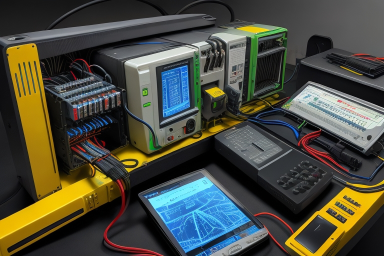
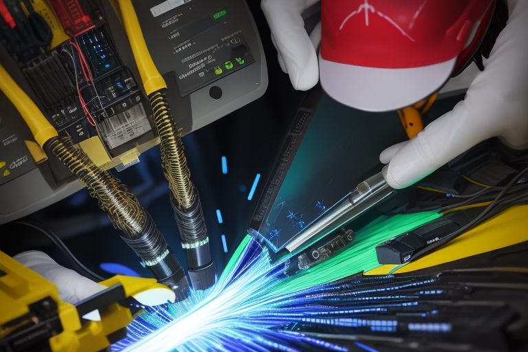

Son procedimientos críticos en redes de comunicación. Garantizan una transmisión eficiente de datos al preparar y unir fibras ópticas.
Terminación de Fibra Óptica
La terminación implica cuidadosos cortes y pulidos para preparar el extremo de la fibra. Esto asegura una conexión eficiente y libre de pérdidas de señal.
Empalme de Fibra Óptica
El empalme une extremos de fibra óptica. Técnicas como el empalme mecánico y el empalme por fusión se utilizan para garantizar una conexión precisa y mínima pérdida de señal.
Consideraciones Importantes
- Conector: Dispositivo provisional que conecta dos fibras mediante una unión también provisional o conecta fibras al equipamiento. Se desconectan ocasionalmente para pruebas o reenrutamientos.
- Fusión: Unión permanente entre dos fibras, principalmente utilizada para concatenar fibras largas en instalaciones exteriores y colocar cables de fibra conectorizados (pigtail) para terminarlos.
- Empalme Mecánico: Fusión en la que las fibras se alinean por medios mecánicos.
- Empalme por Fusión: Fusión creada al soldar o fusionar dos fibras.
- Fusionadora de Fibra Óptica: Instrumento que empalma fibras al fusionarlas o soldarlas, generalmente con un arco eléctrico.
- Hardware: Las terminaciones y los empalmes requieren componentes (hardware) para protección y administración, como paneles de conexión, cierres de empalme, etc.

